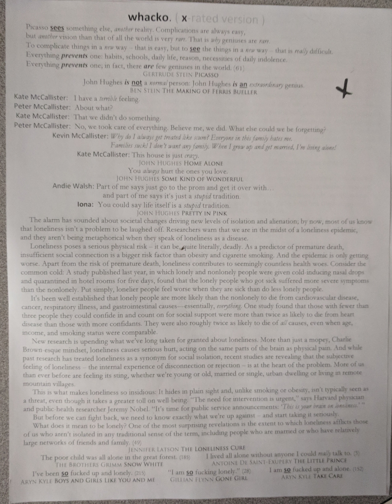

Disclaimer!
Before you begin I would like to remind you that what happens in K-114 is not what happens in K-114.
Fifth Day of the rotation : 06/14/18
Speech exercises for Speakers
Topics:
Zapatilla, "Humongous", and W.O.O.C
No mention of mullets
Fourth Day of the rotation : 06/12/18
Finals Day
No mention of mullets
Third Day of the rotation: 06/11/18
Sab presents a film he made
No mention of mullets
The Sabbath: 06/08/18
We discuss what we've learned in class this year
We read the rest of the little prince
Sab stresses the importance of Sophia and how she will always be there
We read a montage
Songs of the montage: Clint mansell - Summer overture, Beach House - 10 Mile Stereo, Frightened Rabbit - Keep Yourself Warm
Necks are broken
No mention of mullets
First Day of the Rotation: 06/07/18
Sab incites a discussion about the secrets we can't even write about in our diaries
Sab talks about the difference between men and women
Sab talks about Donald Trump
We read up to page 56 of the Little Prince
We read a montage
Songs of the montage: Clint Mansell - Dreams, Electric Light Orchestra - Livin' Thing
We watch a short film called Cold and Dry by by Kristoffer Joner & Bjørn Arne Odden
No mention of mullets
Fifth Day of the Rotation: 05/25/18
Sab talks about how this was a survey class and we received a classical education
Sab talks about how we haven't evolved to process the summer and mother metaphor
Sab asks the class to formulate a question
Sab explains eleven eleven
Sab talks about the Royal wedding
Sab shows us Alex Gross's oil on canvas contemplation
We read a montage
Songs of the montage: Beach House - Silver Soul, The Daysleepers - Loved by The Sun
Sab asks us about a spring renewal
No mention of mullets
Fourth Day of the Rotation: 05/24/18
Sab talks about progress
Sab aggregates a discussion on metaphors
We read Act III of 500 Days of Summer and analyze the Cheshire Cat
Sab asks if the characters of 500 days of summer can be seen in the classroom
We read a sheet:
{kind=link}
{kind=link}
No mention of mullets
Third Day of the Rotation: 05/23/18
We finish reading up to and including chapter 14 of The Little Prince
Sab asks us about the Grown Ups in the story
We read a narrative :
{kind=link}
{kind=link}
Songs of the narative: Jonathan Richman - That Summer Feeling, Flo Morrissey - Pages of Gold
We finish Five Hundred Days of Summer
Sab discusses how important it was to watch The Graduate before watching the final act of Five Hundred Days of Summer
No mention of mullets
Second Day of the Rotation: 05/21/18
We discuss Aaron Weisenfield's oil on canvas Homecoming
We watch the beginning of The Shawshank Redemption
We watch a montage
Songs of the montage: Coney Island Dreaming, Belly - Feed the Tree, U2 - Mysterious Ways, Johnny Cash - Hurt, Hum - Stars
We read chapters 10 - 14 of the Little Prince
No mention of mullets
First Day of the Rotation: 05/18/18
We read some quotes from the overhead
Sab talks about five different categories of evolution
Sab asks us about what we've learned
We watch a scene from Glengarry Glen Ross (1992)
We watch a montage
Songs of the montage: Don't Panic - Coldplay, Washed Out - Far Away, Beach House - 10 Mile Stereo
No mention of mullets
Last day of the Rotation: 05/07/18
We read some quotes that people express their feeling of understanding
Sab talks about how the story of the universe can be found in any 4 lines
We reread Robert Bly from the sheet titled soft.
We watch Alex Weil's One Rat Short
We read Chapter 20 of Fight Club from the sheet titled soft.
Sab prompts the class for whether we need anything else
No mention of mullets
Second day of the Rotation: 05/04/18
Prom day
No mention of mullets
First day of the Rotation: 05/03/18
Sab talks about how college professors will like David Fincher's movies but not like the meaning
We read the first chapter of Chuck Palahniuk's Fight Club
An attempt to draw the first chapter of fight club is made
We read a sheet titled Soft:
{kind=link}
{kind=link}
Sab mentions that the only things he does alone in the class is floss and listen to Miles Davis
We watch Simon Ellis's short film Soft
Mullets were mentioned
Last Day of the Rotation: 04/27/18
A sheet titled Se7en is read by the class
Sab discusses the KWL table
Sab talks about the first compulsory education laws in Massachusetts in 1852
We read a montage
Songs of the montage: Slowdive - Slomo, Swim Deep - She Changes the Weather, Beach House - 10 Mile Stereo
We watch David Michôd's Crossbow
Sab points out the roses behind the cops shoulder
Sab talks about how all stories about what is going on in Chad's mind
We reread the "Not Exactly" sheet
Sab asks for a spring discovery
No mention of mullets
Second Day of the rotation: 04/26/18
We discuss Three Monkeys by Banksy:
{kind=link}
We discuss whether the light of the prophets is what we wanted
Sab talks about Our Time is Up
Sab defines post modernism
Sab asks what are we doing here
Sheet we read:
{kind=link}
{kind=link}
No mention of mulllets
First Day of the Rotation: 04/25/18
Sab asks us to describe a theme that we see in the Klimts
We reread Micheal Meade's The Water of Life
We watch Our Time Is Up by Rob Pearlstein
We discuss what modern art is
Handouts we read:
{kind=link}
{kind=link}
{kind=link}
No mention of mullets
Last day of the Rotation: 04/16/18
We read a projector sheet called Monkey Business
Sab mentions our indigenous fear of being eaten by our parents
We read The Giving Tree by Shel Silverstein
We read a montage:
Songs of the montage: The Drums - Days, Warpaint - Love Is To Die, Angelo Badalamenti - Laura Palmer's Theme, DeVotchKa - How It Ends
Sab recommends revisiting the quote "Are you a virgin?" from John Hughes' The Breakfast Club.
We read a sheet:
{kind=link}
{kind=link}
Then we read chapter 9 of The Little Prince
The Little Prince and The Giving Tree can be found online
No mention of mullets
Fifth Day of the Rotation: 04/13/18
Sab recommends reading Educated by Tara Westove
We define discourse
We discuss whether marriage is a poetic metaphor
We read the little prince up to page 25, End of Chapter 8
We read a montage
Songs of the montage: Chairlift - Wrong Opinion, Low Place Like Home - Sneaker Pimps, Bloody Sunday - Lisa Bresnan
A moment of silence lasts until the end of the block
No mention of mullets
Fourth Day of the Rotation: 04/12/18
A student asks the class why it was named The Breakfast Club
We conclude that it is a breaking of their fast on intimacy
We watch Mark Osborne's MORE
Sab notes the important of the musical piece Elegia by New Order in More
We read a montage
Songs of the montage: Journey - Only The Young, Don't Stop Believin' - Dallas String Quartet, Maxence Cyrin - Where Is My Mind, Chairlift - Wrong Opinion
We read Where the Wild Things Are by Maurice Sendak
Sab talks about Erik Erikson
No mention of mullets
Day Three of the Rotation: 04/11/18
We discuss material on Whacko X
Sab encourages the class to step away from the art and plainly discuss their understandings
Sab talks about how we are prone to objectification
Sab talks about Zuckerburg's court hearing and how he used a height chair
Sab discusses Stockholm Syndrome. People overpaying for cheap services without question but when asked for lunch money they are reluctant to give up their cash.
We discuss Doubting Thomas
{kind=link}
Sab talks about Mother Mary
We read a montage
Songs of the montage: Erik Satie - Gymnopédie, The Beta Band - b + a, Black Marble - A Great Design, Beach House - Levitation, Stockholm Syndrome - Couldn't Get It Right
Sab asks if that's it? Shall the students continue to function as if they've never received the teachings? Who knows?
No mention of mullets
Day two of the rotation: 04/10/18
We read some quotes
Sab explains a classical education
Sab talks about China Lobbyists
Sab talks about weird science
We watch the Breakfast Club, timestamp= 1:32:20
Sab mentions how you won't find anything if you google search The Breakfast Club Escher's Eye
No mention of mullets
First day of the rotation: 04/09/18
We read some quotes
Sab talks about the fifth season of life
We read a sheet called whacko X:
{kind=link}
{kind=link}
We start a new sheet and write #'s 1-3:
Write something you've taken away from one of the quotes for 1a, 2a, and 3a
Cite the quote for 1b, 2b, 3b
We briefly read a montage
Sab talks about how many of us will become parents
Song of the montage: Being Her Shadow - Grouper
We watch more of the Breakfast Club, Time Stamp: 1:23:50
No mention of mullets
Last day of the rotation: 03/26/18
Sab talks about how greek teaching has been labeled as conservative
Sab mentions how people on opposite sides of the political spectrum can't have a conversation with each other
We watch up to Act 2 of The Breakfast Club, Time Stamp: 1:05:00
Song of the montage: Surface Of Eceon - Silence Beheads Us
Sab assigns project 9
No mention of mullets
Day Five of the rotation: 03/23/18
We relate a quote to the Breakfast Club and try to explain who is the target audience
Sab talks about Volkswagen
Sab talks about how Coca-Cola and IBM dipped into Nazi profits
Sab slips and reveals the figure in the Breakfast club was modeled after a bird's bone
Sab tells the class to let the story introduce itself
We watch Breakfast club till the end of act one, Time Stamp: 29:40
Sab prompts the class for the conversation that the men in the story can't have
Sab talks about how important it is to discuss the story
Sab assigns number 5:
Do the same thing as number 4 but apply Act 1 of John Hughes's The Breakfast Club
Write number 5 as number 3 on the word document
No mention of mullets
First Day of Spring: 03/20/18
We read some quotes
We watch half of the first act of the Breakfast Club
Sab asks how many characters are in the room
Sab expresses discontent due to the illiteracy of the class
We read a montage
Songs of the montage: Simple Minds - Don't You (Forget About Me), Beach House - Other People, Lea Porcelain - Bones, Emily Haines & The Soft Skeleton - Our Hell
Sab talks about pregnancy trimesters
No mention of mullets
The last day of Winter: 03/19/18
Sab asks the class to talk about something enlightening they've taken from the class
A discussion about school shooting drills takes place
We read Lydia Davis's short stories, Fear, The Fish, and What she Knew
We watch Some Boys Don't Leave by Maggie Kiley
We discuss Pablo Picasso's Weeping Woman:

Sab assigns number four:
You must add three sentences in the front of a quote while applying Maggie Kiley's Some Boys Don't Leave
Quote:
Everybody's got a story like this. It's as old as the hills. You do not have to be afraid of the truth. You don't have to be afraid of this.
Simon Stone Daughter
Basically the same thing as number three but you're applying Maggie Kiley instead
You must also type number three and four into a word document but we're not handing it in so don't print it out
No mention of mullets
Fifth Day of the Rotation: 03/06/18
Sab talks about losing power
Sab talks about the Disney Princess Disease and how a healthy relationship is built on trust
We read a montage
Songs of the montage: Lorn - All Corrupt Everything, Lana Del Rey - National Anthem, Nelly Furtado - I'm Like A Bird
We watch 500 Days of Summer till the end of act 2
Sab talks about how talking about your past in a relationship can be dangerous
Sab recommends reading A Christmas Carol
Sab mentions that we're all afraid to graduate
Sab assigns number 3
You must add three sentences in the front of a quote while applying Beach House's Wild. No citations are required but be sure to include the title of the song
Quote:
Everybody's got a story like this. It's as old as the hills. You do not have to be afraid of the truth. You don't have to be afraid of this.
Simon Stone Daughter
No mention of mullets
Fourth Day of the Rotation: 03/05/18
We read some quotes from a page titled "it matters..."
We read a montage
Songs of the montage: Philip Glass - Low Evil, Janes Addiction - Pets, Fleetwood Mac - Dreams
We continue 500 Days of Summer from where we left off
We discuss what we would do if we were a friend of Tom Hansen
We read a narrative that included this song: Carla Bruni - Quelqu'un M'a Dit
Sab Assigns number 2
You must add five sentences to this quote while applying it to Amy Hempel's In the Animal Shelter, be sure to include one quote from the Hempel's work in your response:
He had warned her about the book. Now it was too late.
Chris Van Allsburg Mr.Linden's Library
No mention of haahhhhh
Third Day of the Rotation: 03/02/18
A female mullet is the pinnacle of female expression
We read some quotes
Sab talks about the Virginia vs Villanova game
We talk about complicity
We read a montage
Songs: Alan Parsons - Sirius, Fazerdaze - Lucky Girl, To All The Girls - Beastie Boys, Bear In Heaven - Sinful Nature, White Town - Your Woman
We continue watching 500 Days of Summer from the end of the first act
Sab notes the importance of Joy Division - Love will tear us apart
Sab also notes the illusion of Son of Man in 500 Days of Summer
Mullets were mentioned
Second Day of the rotation: 03/01/18
We read some quotes
We interpret dubioslitic
We define Intimacy
Sab talks about how Manhattan sweat shops encouraged females to delay pregnancy
Sab talks about penicillin and how short lifespans used to be
Sab talks about how Kate Upton and a completely covered Muslim girl are products of isms
We read a montage
Songs of the montage: Too Shy - Kajagoogoo
Sab notes how The Feminine Mystique is what kicked off the women's movement
Sab assigns homework:
For number 1a. you must intone this quote, add 4 sentences that continue Stoller's voice:
Underneath all that polite bullshit, we're all just running on cavemen software
Nicholas Stoller The Five-Year Engagement
For number 1b. you have to posit. Create an argument for or against the quote. It must be five sentences in total
No mention of mullets
1st Day Back: 02/28/18
Sab asks the class what the project was
We try to define the project abstractly
Sab talks about how King George was a beta and how fake alphas can exist in civilization
Sab references a study at the University of California on Bonobo Chimps
Sab asks the class who they'd rather be a beta under, Speedy Gonzales or Yoda
Sab choose Speedy Gonzales
Sab talks about M. Night Shyamalan's film Split
We read a montage
Songs of the montage: Thomas Newman - Dead Already, Ben Frost - If Anybody Asks We're Already Fucked
Sab asks the class to share their initial reactions
No mention of mullets
The Trippiest Sab Class of the Year : 02/16/18
Guest Sab writer
Sab passes out a short montage
Sab mentions the book "Denial of Death" and how we repress death and how it changed his life
Sab mentioned how he had to dumb down his class
Sab mentions how to acedemic setting is the best place to discuss these ideas
The montage contains Amy Hempel's "In the Animal Shelter"
Sab talks about minimilism
Sab engages the class to provide a response to the story
We read a montage
Songs of the Montage: Candy by Lower Dens and Wild by Beach House, Frente! - Girl
Another montage is handed out
Sab mentions evolution and crows
Sab mentions To Nesbo "The Snowman"
Project #7 is assigned:
In five 7-9 sentance paragraphs use one theme per paragraph to describe "In the Animal Shelter". Use titles, the thesis and two citiations in each paragraph.
#1-5:
a: theme
b: 1st citation
c: 2nd citation
d: Thesis
e: Paragraph w/thesis
Quote:
Every time you see a beautiful woman, someone is tired of her, so the men say. And I know where they go, these women, with their tired beauty that someone doesn’t want – these women who must live like the high Sierra white pine, there since before the birth of Christ, fed somehow by the alpine wind.
They reach out to the animals, day after day smoothing fur inside a cage, saying, “How is Mama’s baby? Is Mama’s baby lonesome?”
The women leave at the end of the day, stopping to ask an attendant, “Will they go to good homes?” And come back in a day or so, stooping to examine a one-eyed cat, asking, as though they intend to adopt, “How would I introduce a new cat to my dog?”
But there is seldom an adoption; it matters that the women have someone to leave, leaving behind the lovesome creatures who would never leave them, had they once given them their hearts. (157)
Amy Hempel In the Animal Shelter
No mention of mullets
Fifth Day of the Rotation: 02/15/18
Sab has an emotional moment
Sab talks about what the name claire means
We read a montage
Songs of the montage: Mazzy Star - Into Dust, Men Without Hats - Safety Dance
We watch the short film House Hunting by Amy Lippman
We discuss a truth in the short film
No mention of mullets
Fourth Day of the Rotation: 02/14/18
Sab talks about car engines and estrogen levels
We talk about Jaws
We read a montage:
Songs of the montage: Sylvan Esso - Dreamy Bruises, Piano cover of Where is My Mind by the Pixies, and Emiliana Torrini - Heartstopper
Sab talks about how people misinterpret metaphors
No mention of mullets
Third Day of the Rotation: 02/13/18
Sab goes over verbs, adjectives, and nouns
Destroying livers and needing a hand is discussed
We watch a montage
Songs of the montage: Apocalypse - Cigarettes After Sex, Standing Outside a Broken Phone Booth with Money in My Hand
We try to define abstractions
No mention of mullets
Second Day of the Rotation: 02/12/18
We discuss Aron Wiesenfeld's The Remains:

We watch a montage
Songs of the montage: Now, Now Every Children – Sleep Through Summer, Puccini - Madama Butterfly, Andy Stott - Cracked
We intone this quote for #1 on a new sheet (add 4 sentences):
The things that one feels absolutely certain of are never true.
Oscar Wilde The Picture of Dorian Grey
We discuss the artists dualistic stance on their audience
Sab talks about the youtube personalities of Diamond and Silk
No mention of mullets
First Day of the Rotation: 02/09/18
Sab talks about the parade and how it is a celebration of a corporation
Sab talks about the dip in financial markets
Sab talks about how we have been genetically modified in culture
We watch a montage
Songs of the montage: Slowdive - No Longer Making Time, Beach House - Wild, Wolf Alice - Blush.
Sab explains Disney Princesses
Sab mentions Marc Dennis
The class discusses truths that they will hold onto
No mention of mullets
Last Day of the Rotation: 01/31/18
We read quotes aloud
Sab plays Stevie Wonder while we read
Someone interrupts Stevie Wonder
We write quotes from Miranda July's short story "It was Romance" that are cold hard truths supported by Khoshaba for #3:
a.57-58
b.59
c.60
d.61
e.62
Sab assigns project #6: Too Late
No mention of mullets
Fifth day of the rotation: 01/30/18
Sab talks about John Hughe's film Weird Science
Sab talks coping mechanisms: hyperactivity and hyperfatigue
We watch a montage
Songs of the montage: Simon & Garfunkel - Mrs. Robinson, Wolf Alice - Blush, Pink Floyd — Comfortably Numb
The class tries to define what IT is
No mention of mullets
Fourth Day of the rotation: 01/29/18
Sab has people discuss a picture Wodan per the quotes we've read
Sab mentions how Zuckerberg is going to have a meeting with shareholders on how people should spend less time on Facebook
Sab asks the class who is to blame for the circumstance of the modern female
Sab talks about the cult following of Eat Pray Love
We discuss Jamestown
We discuss a quote from E.L. Jame's Fifty Shades of Grey
Sab was disappointed
Sab felt that a female with a mullet could've provided an interesting perspective but one wasn't present
Other than that there were no mention of mullets
Third day of the rotation: 01/26/18
Sab talks about Miranda July's short film "It was Romance"
Sab mentions Jeffrey Blitz and his study of the effects of powerball
Sab talks about the study at the University of Miami on whales. A piece of glass was placed to keep a male and female whale separated by a piece of glass. After an extended period of time the glass was removed and the whales didn't cross where the glass was
Sab talks about Jon Favreau's film Swingers
Sab talks about a movie called Bottle Rocket by Owen Wilson
Sab discusses a book called Like a Virgin and how it explains that females no longer need men for reproduction
Sab mentions a movie called Rushmore by Owen Wilson and Wes Anderson
We read a page of quotes and write down three talking points, a,b, and c for number two
We watch a montage
Songs of the montage: Frankie Cosmos - On the Lips, Emiliana Torrini - Heartstopper, French for Rabbits- Claimed by the Sea
No mention of mullets
Second day of Sab: 01/25/18
A hidden glowing X is revealed
Sab discusses the beast and the labyrinth
Sab talks about how the Breakfast Club is a story for the vernal equinox
We watch a montage
Songs of the montage:Clint Mansell - Winter Overture, Phantom of the Opera(song)?
We read "It was Romance" by Miranda July
Sab talks about Da Vinci's unique characteristic of being a scientist and an artist at the same time
Sab assigns #1:
Apply this quote with three sentences, be sure to mention Miranda July's short story "It was Romance"
Women's emancipation was bound to come with some anxiety about now having... the same setress as men. The pressures of sexual and social freedom bring... new problems for which women have been unprepared
Deborah Khoshaba Fifty Shades of Grey: A comment about women's sexual and social freedom
No mention of mullets
Return to Sab: 01/24/18
Sab invokes a conversation about greek Logos
A debate over whether logos is a catch 22 takes place
Sab discusses Mark Twain and compares holding his hand on a hot skillet for 10 seconds vs 10 seconds with a Victoria's Secret Model
Sab talks about stock in Netflix
We watch a montage
Songs of the montage: Angel of Music - Andrew Lloyd Webber's The Phantom of the Opera
Mullets were mentioned
Shadow people do not have mullets
Last Day of the Rotation: 01/12/18
We read the rest of Aryn Kyle's short story "Boys and Girls Like You and Me"
An assembly interrupts the class
Sab explains Steins Law
Sab assigns Project #5: Steins Law
After reading Aryn Kyle's short story "Boys and Girls Like You and Me;" explore, intone, and articulate the following:
1. Explore: What is the "fall"?
- Five sentences
2. Intone: Snyder
- 1+4 sentences
3. Intone/Apply: Stein - per the artist's fall message
-1+4 w/thesis, titles, and "citation"
4. Intone/Apply - Kundera - per character/ization
-2+5 w/thesis, titles and two "citations"
5. Intone/Apply: Flanagan (Oculus)
- 2+5 w/o thesis but w/titles, two "citations"
Citations:
There was a time above, a time before. There were perfect things, diamond absolutes. But things fall, things on earth. And what falls... is fallen.
Zack Snyder Batman V. Superman: Dawn of Justice
If something cannot go on forever, it will stop.
Herbert Stein Stein's Law [Of Economics]
Characters are not born like people, of woman; they are born of a situation, a sentence, a metaphor, containing in a nutshell a basic human possibility that the author thinks no one else has discovered or said something essential about. A story is an investigation of human life in the trap the world has become.
Milan Kundera The Unbearable Lightness of Being
I've learned a lot about what happens to people when they can't process something horrible.
Mike Flanagan Oculus
No mention of mullets
Fifth Day of Sab: 01/11/18
We read some quotes
The role of the individual in dissociative behavior is discussed
Sab lets anyone comment on the quotes we've read
Sab mentions how he feels bad for people who never speak in his class
We read up to page 222 in Aryn Kyle's "Boys and Girls Like You and Me"
Sab gives homework:
On a new sheet intone the quote "Few people know the predicament we are in" - General George Washington Cambridge, 1776
Add 4 sentences, create a thesis, and quote a line from p. 222 of Aryn Kyle's "Boy's and Girls Like You and Me"
Write the title in quotations since it is a short story
No mention of mullets
Return to Form: 01/10/18
A student voluntarily speaks in front of the class
Sab confronts the class when the student is ignored
The class tries to find out what is the cause of this dissociative behavior
Another student gets frustrated while providing an answer and will come prepared tomorrow
We listen to a narrative
Songs of the narrative: Nirvana - Something in the Way, Robert Bryan - Suo Gan performed by James Rainbird and the Ambrosian Junior Choir, Hello Saferide - Parenting Never Ends, Pink Floyd - Comfortably numb
Sab allows students to speak about what they've read without raising their hands
Sab recommends reading Mating in Captivity by Esther Perel if you ever plan on getting married
No mention of mullets
Half Day: 01/09/18
We discuss the "cold bare truths"
Sab mentions gold as currency of the sun
Sab talks about the meaning of the name claire, citing John Hughes
Sab talks about revolutions and Sean Parker
No mention of mullets
Early Dismissal : 01/08/18
We read quotes aloud
We read Boys and Girls Like you and Me by Aryn Kyle
While reading we write "cold hard truths" of each little section while reading
Sab mentions farting under the cover and smelling it
We watch a montage
Songs of the montage: U2 - All I Want is You, Beach House - Elegy To The Void
An announcement is made about an announcement that will take place at 10:10
An early dismissal is announced
Sab recommends reading A Nation of Wusses
Mohawks were mentioned
No mention of mullets
First Class of 2018: 01/03/18
A visitor appears to assist in dual enrollment for the class
Transactional analysis is discussed
They talk about the relationship between control and prescription in education.
The visitor was asked to discuss the moral lesson of the Aesop fable The Bell & the Cat, they talk their way around it.
The visitor leaves and we take turns reading quotes from a sheet aloud
The topic of change is discussed
Sab talks about Sean Parker
Sab discusses the Home Alone Trilogy
Last Class with Sab for the Year: 12/15/17
We read the Polar Express
We talk about what it means
We watch Peter and the Wolf by Suzie Templeton
Sab mentions her other film dog
We watch a montage
Songs of the montage: Somewhere in my memory - John Williams, Imagine Dragons - Demons, Foo Fighters - Everlong
We talk about what we make of all of this
No mention of mullets
Fifth day of Sab: 12/14/17
We talk about what we wrote for 1 *
Sab talks about the mother metaphor
Freedom is the key underneath your mother's pillow
Mr.H being Wodan is discussed
We write quotes from Sean Tan for #2 like this:
a."Undiscussable"
b."Apocalypse"
c."Closeness"
d."Alice/Sophia Split
We watch a montage
Songs of the montage: Jo Stafford - Early Autumn and Carol of the Bells
For #3 we intone this quote:
Art is a lie that makes us realize the truth. There are so few who understand.
Add three sentences, include a thesis and a quote from The Red Tree
No mention of mullets
Fourth Day of Sab: 12/13/17
Sab talks about class credits
Sab mentions his dog Daisy
Sab mentions how important The picture of Dorian Gray is to understanding five hundred days of summer
We watch The Wraith of Cobble Hill by Adam Parrish Hill
We intone and apply this quote to The Wraith of Cobble Hill for 1 *:
Few people know the predicament we are in
General George Washington Letter from Cambridge Massachusetts / January 14 1776
No mention of mullets
Third Day of Sab: 12/12/17
Sab starts a discussion about democracy
Sab talks about Egypt, Hamilton vs Jefferson, Sam Adams, and the republic
Sab invites someone to talk about democracy
We read a page of quotes
No mention of mullets
Second Day of Sab: 12/11/17
We intone quotes to relate to Luke Doolan's Miracle Fish
We discuss the famous painting of Washington Crossing the Delaware by Emanuel Leutze:

We watch a montage
Song of the montage: O Holy Night
We read The Red Tree by Shaun Tan
For #1 You must intone the line "Democracy demands wisdom" The National Endowment for the Arts
No mention of mullets
Back to Sab: 12/08/17
Sab talks about students failures to complete assignments
Sab talks about Mazaratis and how people try to keep them scratch free
A Wabi-Sabi discussion takes place
The beauty of death is discussed
Sab mentions that Fall reminds us that things are imperfect
Sab talks about the biblical story, Feeding of the 5000, in terms of a subway sandwich
We watch Miracle Fish by Luke Doolan
No mention of mullets
Last day with Sab for the rotation: 11/29/17
Sab talks about college grading and how C's are basically double F's
Sab Assigns Project #4 Square Messages
Relate 5 archetypal themes to Jumanji
1. Evaluate/Cite/Relate
a."Undiscussable" (Van Allsburg).
b."Apocalypse" (Van Allsburg).
c."Trust and attachment issues" (Van Allsburg).
d."The Alice and Sophia Schizoid Split" (Van Allsburg).
e."Cultural Childhood Ignorance" (Van Allsburg).
2. Conclude/Articulate/Develop
Five paragraphs corresponding to the themes
a. - e.- 5 sentences each
- Use titles
- Lit terms
- Thesis Highlighted
3. Intone/Conclude/Articulate/Develop
a.Lewis
b.Kudera
c.Shyamalan
d.Coppola
e.Jefferson
- 5 sentences each
- typed/size 11 Bell or Garamond
- Titles
Quotes:
I doubt whether we are sufficiently attentive to the importance of elementary textbooks.
C.S. Lewis The Abolition of Man
A story is an investigation of human life in the trap the world has become.
Milan Kundera The unbearable lightness of being
There are things that all of us would find hard to believe
M. Night Shyamalan Split
It is impossible for words to describe what is necessary for those who do not know what horror means.
Francis Ford Coppola Apocalypse Now
The more a subject is understood, the more briefly it may be explained.
Thomas Jefferson In a Letter to Joseph Milligan April 6, 1816
Make sure these relate to Jumanji
Sab talks about how Hollywood takes out the X
No mention of mullets
Fifth Day of Sab: 11/28/17
We read the lines that we wrote
We look for gnoses
We watch a Montage
Songs of the montage: Come As You Are - Nirvana, Levitation - Beach House ,and Low Place Like Home - Sneaker Pimps
We read Jumanji
Mullets were mentioned
Return to our Autumnal Exploration: 11/27/17
We discuss what happens in Autumn
We read Oscar and Alphonse by Chris Van Allsburg
We watch a montage
Songs of the montage: The Train Ride To A New Home - James Horner, Ultraviolence - Lana Del Rey, A cover of I'm on fire - Johny Mayer, a cover of Tainted Love - Soft Cell
We add eight lines to the quote from Oscar and Alphonse
Quote: She knew it was time to send them back. The caterpillars softly wiggled in her hand, spelling out "goodbye."
No mention of mullets
Third Day of Sab: 11/21/17
We read quotes independently
Sab mentions the Japanese Clown Fish
Sab talks about Akhenaten, P.T. Barnum, and Steve Jobs
Sab also mentions Carl Jung, Dr. Phill, and Oprah
We watch a montage
Song of the montage: Soundgarden - Outshined
No mention of mullets
The Dark Side of the Sab: 11/20/17
Sab talks about the moon landing
Compartment C by Edward Hopper is discussed or maybe it's just a picture from google images:
{kind=link}
Sab talks about his private sector to public sector transition
Sab talks about the 24th aspect of personality
We read The Man on the Stairs by Miranda July
No mention of mullets
Back to Sab: 11/17/17
We read quotes aloud
We talk about how we're all liars
Songs of the montage: Suzanne Vega - Toms Diner, The Concretes - Miss You (Rolling Stones), Surface Of Eceon - Silence Beheads Us
A painting by Edward Hopper named Nighthawks was discussed:
{kind=link}
Sab mentions the greatness of Classical and Jazz music
No mention of mullets
The Last day of Sab for the Rotation: 11/06/17
We read the Alice and Sophia text
Sab talks about Wawa Macaroni and the religiosity of money
We write down quotes for 9a-e we write down quotes:
a."Art ought never be empty, existing to make better people of us, teaching the masses, through positive examples and cautionary fables, how we ought to live our lives, what we must avoid at all costs" Douglas Brode - The Twilight Zone
b."You cannot open a book without learning something" Confucius - The Analects
c."Art should comfort the disturbed and disturb the comfortable" Banksy
d."It is impossible for words to describe what is necessary ... for those who do not know what horror means" Francis Ford Coppola - Apocalypse Now
Sab talks about big feet
e."Secrets create barriers between people" Vince Gilligan - Breaking Bad
Sab assigns a new project
With formal academic tones, demonstrate your knowledge of academic language and four course themes: Gnosis, Silence, Itimacy, and Alice/Sophia:
1. Intone Brode
2. Intone Confucius
3. Intone Banksy
4. Intone Coppola
In 7-9 sentences, compose complete, isolated paragraphs
Highlight thesis
Two Citations from Kyle per response
Use titles
5. Intone Gilligan, interrelate Kyle's Economics and Michods Crossbow
7-9 sentences
Use one quote from Economics and one from Crossbow
Highlight thesis
Use titles
No mention of haaa...
Fifth Day of Sab: 11/03/17
Sab makes people paraphrase the quotes that we wrote down
Sab mentions how men have nipples
We read the rest of Economics by Aryn Kyle
We write down quotes for each theme: Silence, Horror, Intimacy, and Alice/Sophia for numbers 5,6,7, and 8
Sab makes people intone using a sheet of quotes
No mention of mullets
Fourth Day of Sab: 11/02/17
We talk about the titles we chose
Sab talks about parenting
We watch a montage
Songs of the Montage: Concrete Blonde - Everybody Knows, Chromatics - Kill for Love
No mention of mullets
Third Day of Sab: 11/01/17
We talk about stupid girls being killed in horror stories
Sab mentions the chief of staff at the White House
Sab talks about the mother metaphor and how hard it is to cover
Sab compares the mothers in Crossbow and Home Alone
At the end of class we write a title from a page of quotes that contains something horrifying
No mention of mullets
Saboween, Dark answers for Dark Realities: 10/31/17
Sab mentions phone collection record
Sab puts titles on the board
Sab makes people speak using the titles as props
Sab mentions Hannibal Lecter's constant heart rate
Unkown pleasures on Tom's shirt
We watch the short film Crossbow
We watch a montage
Songs of the montage: Exploring the Forest - James Horner, Deep into the forest - Micheal Nyman
Sab assigns #2: Write Everybody has a secret and then intone it using Crossbow
No mention of mullets
The return to Sab: 10/30/17
The class reads quotes about femme fatales, everyone knows
We watch till the end of act one of Marc Webb's 500 Days of Summer. Time Stamp = 33:55
We read quotes and intone them
We write down the quote form a BCTHS graduate: "If we could be warned or educated about ... the horrors of the world, it would be a better place"
You have to intone the quote, don't write it in quotations just continue to write after it as if you wrote it
No mention of mullets
Last day of Sab for the rotation: 10/19/17
Sab makes people speak
Sab discusses the movie Up
We watch a montage
Sab plays Boyhood. Time Stamp= 6:53
We read The Stranger by Chris Van Alssburg
Sab assigns project #2 Stranger Danger
You have to write 4 paragraphs. 1. Silenece/inability to communicate 2. Horrifying realities 3. Danger of Closeness with self/others/organic life 4. Intone/explore/analyze Jefferson per Van Allsburg.
Quote= "There is not a truth on earth ... which I fear or would disguise" Thomas Jefferson In a letter to William Duane March 22, 1806
Four should be written as you don't quote Jefferson just write it then add more sentences
Each must have 7-9 sentences with thesis highlighted and 2 quotes per piece
No mention of mullets
Server died on Tuesday, sorry, site doesn't have https for now will correct in the future
Fifth Day of Sab: 10/18/17
Sab asks what makes a horror story horrifying
Class tries to identify a horrifying truth
Sab discusses the trilogy of The Stranger, Jumanji, and The Polar Express
We watch a montage
Songs of the montage: Phantogram 'Bill Murray', Coldplay - Yellow, Beach House - Wild
We watch more of The Autopsy of Jane Doe. Time stamp: 45 min
Sab assigns number 3. We have to cite 3 things from Ovredal that deal with horror. Pics of Ovredal's work attached
{kind=link}
{kind=link}
Sab also assigns 1b. You have to do the same thing as number 1a. but using quotes from Ovredal
No mention of mullets
Fourth Day of Sab: 10/16/17
Class reads death quotes
Sab spills a barrel of monkeys to show how chicken graze
Sab mentions ephemeral
We watch The Autopsy of Jane Doe. Time Stamp= 31:19
We watch a montage after that
Song of the Montage: Somewhere in Time OST - 02 - The Old Woman
Sab assigns project 1a. You have to apply the quote "It is impossible for words to describe what is necessary for those who do not know what horror means" Francis Ford Coppola Apocalypse Now to Stephen King's The Body. It must be handwritten, 7-9 sentences, highlight the thesis, with two citations from King.
No mention of mullets
Third Day of Sab: 10/13/17
Sab disciplines the class about not paying attention
Sab talks about what would happen if he put a bad grade into Skyward for the abusive silence in the class
Sab goes over the seasons of the year
Sab talks about how George Washington was a sensitive person who cared about napkin holders and the color of his wallpaper
Sab gets the whole class to raiser their hands because of social pressure that he imitates like the janitor in the Breakfast Club
Sab notes the importance of political statements, how we switch from us to everyone
We view a short montage
Song of the Montage: Warpaint - Love Is To Die
For homework you have to intone a quote by Nic Pizzolatto from True Detective "Death created time to grow the things that it would kill" Add four sentences after the quote relating it to the concept of horror
No mention of mullets
Second Day of Sab: 10/12/17
There was a visitor
Sab talks about blind spots
Sab shows another end of summer horror story called Teleglobal Dreamin' by Eric Michael Flanagan
Sab notes the importance of being quiet during a film
After the film we watch a montage
The song of the montage: Earth, Wind & Fire - September
Sab talks about how 78% of us won't save a dollar
Sab ends the class with a picture of a kid with apple earphones in his ears and an apple ipod in his hand
He mentions testosterone, hockey, and women
No mention of mullets
First Day of the Rotation: 10/11/17
Sab talks about Horace
Sab said if you couldn't complete the assignment which you had 14 days to complete, you should go to Bucks to save your parents a lot of money
We read some quotes
Gene Harlow is discussed
Sab discusses NFL's low ratings
The class has a horrifying truth clap
Sabs hand is licked
No mention of mullets
Last Day of Sab for this Rotation: 10/02/17
U2 - Mysterious Ways can be heard faintly
Sab says that most of us can't read a book
Sab introduces Stephen King's Novela Different Seasons
Sab plays Who - Won't Get Fooled Again while we write
Sab plays the SNL skit - Black Jeopardy to display the duality of language
We learn how to quote by using a variety of works
The class ends on Sab explaining Project #1
No mention of mullets
Fifth Day of the Rotation, Day of acknowledgement: 9/29/17
A picture of a labyrinth on a beast is discussed
Sab made a reference to red baboon booty when discussing Hugh Hefner
Sab talks about how Blue Beard kills all of his wives and nobody question it
Sab talks about Ferris Bueller
Sab also discusses how you have two options with the beast, you can face it or you can sit around and wait for it to kill you.
We watched a little bit more of (500) Days of Summer
Sab plays guess the song
We listen to a choir cover of U2 - With or Without You
No mention of mullets
Fourth Day of the Rotation: 9/28/17
Sab asks the class what he should do for back to school night
Sab talks about how you cannot love the teachings and love what the teachings represent
Sab mentions the Helio Biblia.
Sab talks about rubber roofs and how they don't let anything out so it makes the building hot
Sab tells a story about a cougar who escaped a zoo. He relates it to The Divided Self by R.D. Laing.
Sab talks about Sid and Nancy
Sab tells us how we should read the newspaper articles about Thomas Jefferson
We read chapter 1 of the Little Prince again
We watch a montage
Song of the montage: Regina Spektor- Us
Sab talks about how everybody hates Negan
No mention of mullets
The Third Day of the Rotation: 9/27/17
Sab plays football
We go over themes of silence, secrets and intimacy problems
Sab mentions how a lot of drink products have fire retardant chemicals in them. The same stuff that keeps carpets from catching on fire is inside Gatorade and you don't think that it will affect your neurology.
We cite a line from the paragraph we wrote that is horrifying for letter b.
Then we wrote a Socratic question related to the material.
Sab does a theater performance as Jane
Sab says you can't love Mammon and God then proceeds to crumble a piece of paper
Sab brings up the rallying cry of Democracy, "The individual can be trusted - Leave him alone" Pericles
We watch a montage about Sophia
Song of the montage: Nirvana - About A Girl
We then watch the beginning of (500) Days of Summer
Sab mentions the importance of the song Regina Spektor- Us in the movie.
Sab also says some of the scenes are related to Jack & Diane
No mention of Mullets
The Second Day of the Rotation: 9/26/17
Sab talks about the last summer of our lives
The planet is a dictator
Sab discusses pessimism and optimism
No mention of mullets
The Return to Sab: 9/25/17
Class is interrupted by a class meeting
We read a sheet of covert quotes
Then a montage is played
Song of the montage: Carla Bruni - You Belong To Me
No mention of mullets
Seventh Day of Sab, End of Rotation: 9/12/17
Part of the class was taken up by a class assembly
Homework is discussed and we fail to remember quotes
A montage about Alice and Sophia is played
Song of the montage: Electric Light Orchestra Do Ya
We read a book called The little Prince by Antoine de Saint-Exupéry
A narrative was played and included these songs : The Verve Pipe The Freshman, Taken by trees To lost someone
No mention of Mullets
Sixth Day of Sab: 9/11/17
Went over homework
A sheet of quotes was distributed: Alice & Sophia: horrifying secrets [a gnostic sampler]
For #5 you must write a sentence about a horror that you notice within the quotes
A montage about Alice and Sophia is watched
Song of the montage: French for Rabbits - Claimed by the Sea
For homework you have to do 6 a,b, and c. Write about a silence, horror, and inimacy issue that you see on the sheet of quotes.
No mention of Mullets
Fifth Day of Sab: 9/8/17
Class Contract is distributed
A quote is transcribed for #2 : "So long ago, I don't remember when ... That's when they say I lost my only friend. Well, they said she died easy of a broken-heart disease... as I listened through the cemetery trees." The Wallflowers One Headlight
Then you must perform a diagnosis of the quote by writing a simple sentence for #3
At the end of class another quote is recorded for #4: "You have a secret eating away at you. You must tell it to someone, or you will die." European Fable The King's Ears. For homework you must write three sentences following the quote that match the tone.
Song of the montage: Purity Ring - Lofticries
No mention of mullets
Fourth Day of Sab: 9/7/17
Sabatini sings a Metallica song
The movie IT is discussed.
Sabatini discusses the 95%
Sab ends class with a montage about the "divine eternal goddess Sophia"
Song that was played during the montage: Beach House - All Your Yeahs
No mention of mullets
Third Day of Sab: 9/6/17
Sab talks like a youtuber named Extreme Philly Fishing
Go over a page of quotes and then watch a montage
Song that was played during the montage: Frankie Cosmos - "Art School"
Transcribed a line from Irrational Man by William Barrett : "A brief glance at modern art may serve to make plain the spiritual features of modernity in which we all have been deeply involved, but which the artist has the clearest eyes to see."
For Homework, you must write 4 sentences after the quote that connect it to Miranda July's work Are you the favorite person of anybody? while acknowledging and matching William Barrett's tone.
Watch out for stealtch metaphor
No mention of mullets
Second Day of Sab: 9/5/17
Sab explores the themes of silence, knowledge, and human relationships.
Banksy's Butterfly Girl is discussed
No mention of mullets
The Sabbening Begins: 8/30/17
Sab introduces Alice and Sophia
The edge of Seventeen is introduced
Song that was played during the montage: Japanese Wallpaper - Breathe In
No mention of mullets